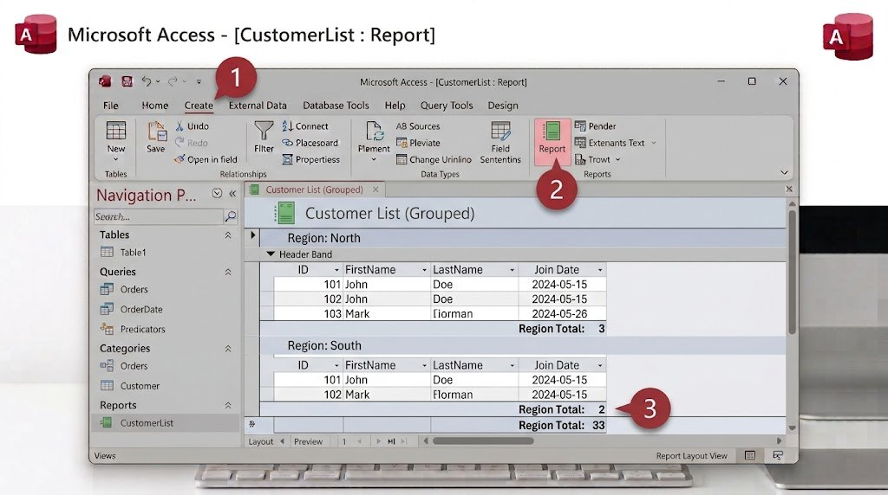

وصلنا إلى الخطوة الأخيرة! بعد أن جمعنا البيانات وربطناها وصفّيناها، يبقى علينا عرضها بشكل منظم وجاهز للطباعة، وهذا بالضبط دور التقرير (Report)؛ فهو يحوّل بيانات الجدول أو الاستعلام إلى صفحة أنيقة، بعناوين وتجميع وإحصائيات.

- حدد جدول "Books" (أو الاستعلام "كتب ابن خلدون" من الدرس السادس) من القائمة الجانبية.
- من تبويب "Create"، اضغط زر "Report"، لينشئ Access تقريرًا تلقائيًا بجميع الأعمدة.
- انتقل إلى عرض "Layout View"، واسحب الأعمدة لترتيبها، أو احذف أي عمود غير مطلوب في التقرير.
- من تبويب "Design"، اضغط "Group & Sort" إذا رغبت بتجميع النتائج (حسب المؤلف مثلًا).
- احفظ التقرير باسم "تقرير الكتب"، وجرّب تصديره بصيغة PDF أو طباعته مباشرة.
هل تعلم؟
يمكن بناء تقرير فوق نتيجة استعلام، وليس فوق جدول مباشرة فقط؛ فتقرير "كتب ابن خلدون فقط" يمكن إعداده بضغطة واحدة إذا بُني فوق الاستعلام الذي أنشأناه في الدرس السادس.
جرّب بنفسك — التحدي الأخير
أنشئ تقريرًا مبنيًا فوق جدول Loans، مجمّعًا حسب "رقم الكتاب"، يبيّن لك عدد مرات استعارة كل كتاب.
تلميح
استخدم "Report Wizard" بدلًا من التقرير التلقائي؛ فهو يمنحك خيار تجميع البيانات مباشرة أثناء الإنشاء، خطوة بخطوة.
🎉 مبروك! لقد بنيت قاعدة بيانات Access كاملة من الصفر: جدولين مرتبطين، واستعلامًا، ونموذجًا، وتقريرًا.